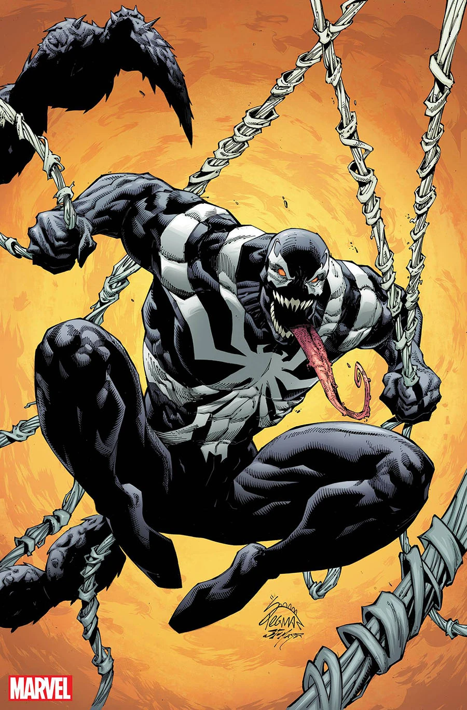

Venom is a former villain of Spider-man turned hero. He was first published as a villain to Spider Man, a symbiote from his black suit which he gained during the Secrets Wars. Venom became an "anti-hero" in his own comics "Venom: Lethal Protector"
Venom is an alien species known as symbiotes. His origins stem from Spider man's black suit but continued far past. He bonded with a rival photagrapher to Peter Parker, Eddie Brock. He and Eddie joined forces to kill spider due to their shared hatred for him. Venom has had many hosts over the years including but not limited to:
Venom's story continues when bonded with flash thompson and becoming Agent Venom and working with Spider-Man and the Guardians of the Galaxy. In Amazing Spider Man #360 Venom reproduces and created a seperate symbiote known as Carnage. At another time some residual of a left over Venom fight made contact with Mr. Negative (A Spider Man villain) which cretaes a new symbiote known as Anti-Venom
During the Venomverse comic series (a darker parallel to the spider-verse event) the readers are introduced to several "venomized" characters. For example: Captain America, Black Panther, Deadpool, Wolverine. During this we are introduced to a celestial race known as the poisons who wish to assimilate the symbiote race. After a fight with the resistance the poisons are made aware of the multiverse leading to the venomverse event.
| Team Affiliations | |
|---|---|
| Avengers | |
| Sinister Six | |
| Guardians of the Galaxy | |
| Savage Six | |
| Dark Avengers | |
| ThunderBolts | |
| Secret Avengers | |
| Revengers | |
| Agents of the Cosmos | |
| Poison Resistance |
Red Hulk
Star-Lord
Ghost Rider
Spider Man
Venom isn't one character but actually a symbiote who people bond wiht making the name Venom a title.
10 Facts About Venom You May Not Know 